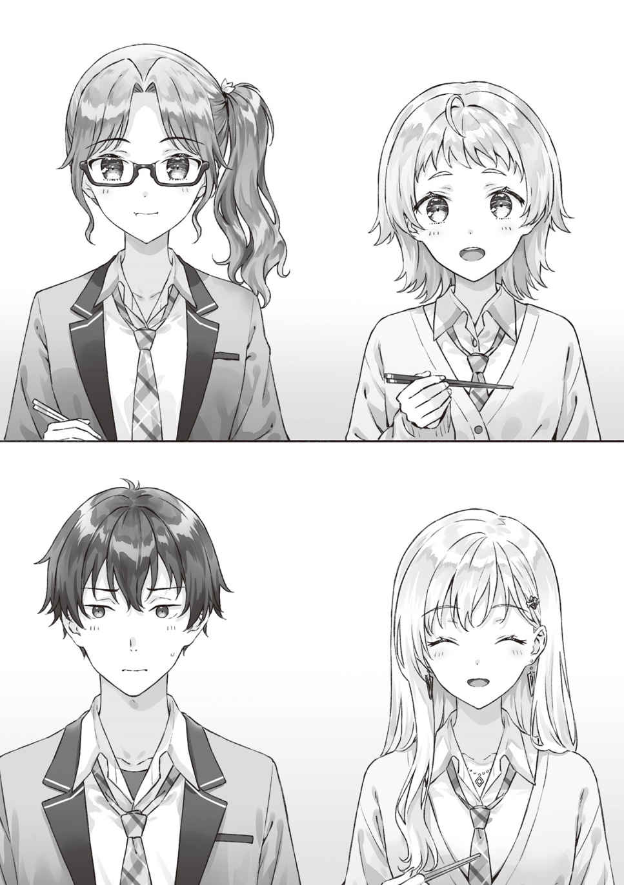

●10月22日（金曜日）
誰が言いだしたのか正確には覚えていない。
午前の授業の終わりを告げる鐘が鳴り、ガタガタと机や椅子を滑らせる音が聞こえてきてから、受験生の教室らしい
そろそろハロウィンだね、と言った
そうしたら前の席に座っている
「どうするって言われても……」
「ほほう。おふたりは仮装に興味があるんかい？」
アンダーリムの眼鏡の特徴的な女子が、片手にお弁当を揺らしながら声を掛けてくる。委員長だ。本名は……なんだったかな。
「今年も
委員長の後ろからひょこりと顔を
「りょーちんはハロウィンの
「昼間だったらあります。夜は親が早く帰れってうるさくて」
ちょっと
「しゃーなし。こんなにかわいいと親も心配だよねえ」
「でももう18になるのに」
「成人かぁ。くう、りょーちんはわたしの目の黒いうちは嫁にやらんよ！」
「なに言ってるのぉ」
言いながらも机をくっつけあってお昼ご飯の用意をしていた。ふたりとも今日は教室でお弁当のようだ。
吉田が顔を寄せてきて、ぼそっと耳元でつぶやいた。
「じゃれあう女子を見てるとハッピーになるよな」
……おまえは何を言ってるんだ。
「吉田。それ、
「は？」
「言う
なにを言ってんだコイツ、という顔の吉田だったが、しばらくしてからはっと気づいた。
「あ、オヤジっぽいぞって遠回しに言ってんな!?」
「正解」
「ひっでぇ！」
「なにがオヤジだって？」
弁当箱を机に置いて椅子に座った委員長が言った。その隣で元の席の女子に断ってから机を借りた
「委員長のことじゃないから安心してほしい」
言動が
「だから、ハロウィンに仮装したいって話だろ」
「
委員長が言って、佐藤さんが「わぁ」と
吉田は反対に不満そうな顔つきになる。
「いや、男の天使とか悪魔とかゾンビとか見せられてもな……」
コスプレに対しての偏見が
「皆で好きなものに変身できるから一体感があって楽しいのであってだね。誰かに見せびらかして褒められたいってのがコスプレの目的ではないのだけど。まあ、そういうのもあってもいいけどさ」
「はえー、そうだったのか。や、ごめん。知らんかった」
委員長に叱られて素直に謝るところが吉田の良いところだ。
「わたしも高校最後の秋だし。ハメを外したいっていう気持ちはあるけどねぇ」
「今年はやっぱり受験優先でしょうか……」
女子ふたりが、はぁと弁当箱の上に大きな
「ま、そうなるかな」
俺も同意する。
「っんだよ、浅村ぁ。おまえまで。１日くらいイイじゃんよぉ」
不満そうに言った吉田が「たわけ。コスプレを用意する時間まで含めたら１日じゃ足りんわ！ ナメんなコスプレ！」と委員長にまたまた怒られた。懲りないなぁ。
「恨むぜ、受験……」
吉田が机に突っ伏した。
「まあまあ。そこまで派手なイベントにしないなら息抜きとしてはいいんじゃない？」
「そうか。だよな！」
喜色を浮かべて顔をあげる吉田に背中から声が掛かった。
「吉田くん。呼ばれてるよ」
声を掛けてきたのは、廊下から教室に戻ってきた
そこから遠慮がちに顔を
「おっと！ じゃ、食堂に行ってくる！」
「ほい」
俺は軽く手を上げて返事をした。
「らぶらぶだねぇ」
仲良く廊下を去っていく
どうやら吉田は無事に彼女とのランチタイムを復活できたらしい。さっそく
「
お弁当を弁当袋から出しながら
「ん。いいよ」
綾瀬さんはそのまま吉田の机と椅子を借りていいかなと俺に尋ねた。すこし迷ったが、吉田が昼休みいっぱいは帰ってこないだろうと思った俺は、あとで言っておくからどうぞ、と促した。
机をくっつけて委員長と佐藤さんと綾瀬さんはお弁当を食べ始める。吉田と食べるかと思っていたのに置いていかれた俺は、ここで立ち去るのも不自然かと彼女たちの隣で弁当箱を出した。
「そんな離れてないで、いっしょに食べよ？」

「うんうん」
委員長と
女子３人に囲まれて男子ひとりってのは高校生男子としては周囲の目が気になって恥ずかしくなるような状況なのだけれど、幸いにしてこの受験間近の雰囲気の中だとそこまで他人の行動に関心をもたないらしく、あまり周りから見られているという感じがしない。
委員長が、いつも誰かしらを巻き込んではランチを楽しんでいるという、クラスメイトが共有している認識があるからかもしれない。
ご飯を食べながらの話題は女子たち３人による学内流行事情だったので、俺はあまり口を挟むことができなかった。まあ、そもそも女子の話題についていける自信なんて最初からないわけだが。
女の子３人は楽しそうに会話をしていたけれども、
やはり父親との面会を求められていることが心に残っているのだろう。
授業が終わり、夜のバイトの時。
売れ行き良好書のポップを作るという使命に目覚めた彼女だったけれど、そこからさらに一歩進んでいた。
書店に入ってすぐ、右側の一角にある平台に、ハロウィン関連の本を集めたコーナーを作ったら、本の周りを飾る手書きのイラストを描いてきたのだ。デフォルメされたカボチャの大王様とコウモリが、積みあげた本の周りを飛びまわっている。
「イラストいいね」
「あの、
「いや。よくできてると思うよ」
なんて会話をしながら飾り付けを終えて、俺と小園さんは事務所に戻った。
「なんですかこれ？」
「
小園さんの問いかけに読売先輩がにまっと笑みを浮かべて答えた。
「はぁ？」
「こっちがネコミミ、こっちがクマミミ」
「それは見ればわかりますけどね」
「で、これがジェスターキャップ。いわゆる道化師の帽子ね」
ミルククラウンのように王冠から
「えい！」
「わっ」
勢いのまま道化師の帽子を
「わぉ！ かわいいねぇ！ うんうん」
「これって新しいイジメですかね……」
「業務」
ぼそっと
小園さんの目が点になった。いや、漫画表現から生まれた言葉だから、実際に目が点のように小さくなるわけではない。驚きつつもなんだそれはというニュアンスも入っている、みたいな表情を指す言葉だ。つまり、小園さんはびっくりしつつも
読売先輩がにやりとした。
「もうすぐハロウィンでしょ。だったら店員もお客様をそれなりの正装で迎えないと！」
「えっ、まさかこれを被って仕事しろと？」
綾瀬さんが「うん」と肯定しつつ
昨年も、実はその前の年もやった（もしかしたら、俺がバイトに入る前からやっている慣例なのかもしれない）。ハロウィンのある週は店員たちは正社員もバイトも店長さえも妙な帽子を被って接客するのだった。小園さんは今年から勤め始めたから知らなくても当然なわけだけれど。
「これを……綾瀬先輩も被ったんですか？」
「まあ」
「浮かれて踊りながら接客する綾瀬先輩……想像できない」
「いやそこまでしないから。誰も踊りながらレジ打ったりしないから」
「してもいいんだよぅ」
読売先輩が言って綾瀬さんにじとっと半眼になって見つめ返されていた。
小園さんが頭に被せられた帽子を取ってしげしげと眺める。
「まあ。これくらいはしてもいいですけど」
「おっ、小園ちゃんはやる気だね！」
「お客さんが喜んでくれるなら被り物のひとつやふたつ、ドンとこいです！」
「えらいえらい！ それに引き換え、
そこは「沙季」のままでも良かったんじゃないですかね。
「やらないとは言ってないです」
「似合うのに。ねー、そう思うでしょ、後輩君」
困ったところで話を振られてしまった。そういうセンシティブな話題は振らないでほしい。こういう質問は「はい」で答えても「いいえ」で答えても文句を言われるといにしえから決まっている。
「俺よりは
「む。逃げおって」
「勘弁してください。ああ、
中華な帽子で前側に大きなお札が垂れ下がっている。
「キョンシーの帽子か。むむ。後輩君、これ、ふつうに
口をへの字に曲げながら言われた。まあ、コスプレなんだから別にまっすぐ被らなくてもいいんじゃなかろうか。確か昨年は店員の誰かがそれを後ろ被りにしていたと記憶しているし。
「ハロウィンかぁ。今年も
「イエス、と言いたいところだけど。それはわからないね」
「えっ。どうしてですか？」
「今年は
えっ、と今度は小園さんだけではなくて、俺も
「ニュースを見てないのかね、少年少女。話題になってたでしょーが」
「俺たち、これでもいちおう受験生なんで……」
「受験生ならなおのこと、時事問題が出るもんでしょー。スマホでニュースサイトを
「うっ……善処します」
やれやれと肩をすくめながら読売先輩が言うことには、ハロウィンで渋谷に集まるのはやめてください──という声明が役所から出たという。最近、ちょっと賑わいすぎて困っていると。
「えー、じゃあ、今年はいつものような賑わいはないってことですかぁ。せっかく高校に入ってちょっとは遅くまで遊べるから見に行けると思ってたのに」
それを聞いて俺は思い出した。
「そうか。小園さんは渋谷が地元じゃなかったよね」
「ですです。憧れてたんですよねー。地元の夏祭りより派手できれいなんだろうなあって」
比べるのが夏祭りなのか……。
まあ、確かに異国情緒はあるかもしれない。もともと日本のお祭りではないわけだし。それを言ったら、クリスマスもバレンタインもなんだけどね。
「でも、
「へぇ」
「ハロウィンが日本で知られるようになったのは割と新しいんだよねぇ。ああ、ここで言う『新しい』は歴史的観点から見た場合の『新しい』ね」
「れきしてきにあたらしい？」
「大正・明治とか江戸よりは新しい、くらいのニュアンスかな。日本では、１９７０年頃、ええとだから昭和の後期だから50年くらい前だね。少女漫画だとその頃にはもうハロウィンを扱った漫画が出てたし。『万聖節に黄金の雨がふる』とか」
「
「うるさいぞ後輩君。今はそこはどうでもいいの！ 時期的にはバレンタインのほうが先に
「50年前は大昔では!?」
小園さんがびっくりしていた。
「いや、それくらいじゃ新しいんじゃないかな」
俺はつい突っ込んでしまった。うっかりと。
読売先輩がにやにやしながら言う。
「へえ。じゃ、後輩君的には新しいっていつからなのかなぁ」
「えっと。……本が残っていれば最近と言っていいのでは？」
「『５０００年前までは最近』なんて言いだしたよ、この後輩君！ なんか言ってやってよぅ、
「
読売先輩と小園さんの視線がくるっと俺に向いた。えっ、俺のせい？
「なんとかは盲目って言葉があったなぁ。まあ、だから、ハロウィンのお祭り騒ぎだって永遠じゃないってことをわたしは言いたいわけ。そして20年でまたちょっと変わりそうかなってさ。変わらないものなんて何もないんだよねー」
先輩が珍しくちょっと
「このお店もさー。近々大規模な改装をやるらしいし」
「あー、店長さんが言ってましたよねー」
「これからたぶん
１００年に一度という渋谷駅周辺の大規模開発もそろそろ行く末が見えてきた。これから工事が次々と終わっていって、新しい施設がオープンし始めると、人の流れも変わっていくのだろう。ハロウィンに取って代わるような新しい習慣も始まるのかもしれない。
変わらないものなんて何もない、か。
俺はついつい歴史的な変化と比べて日々の変化を小さく見積もりがちだ。ひとの一生程度では何も変わらない──みたいに。けれど、たったいま
良いほうにも。
悪いほうにも。
たとえ何をしなかったとしても。
いや、「何もしなかったから変わる」という可能性だってあるか。
変わってほしくないのに放っておいたから変化してしまった、みたいな。観葉植物だって水と光と肥料を与えなければ枯れてしまうわけで。どの植物も砂漠のサボテンのように過酷な環境で生き延びられるわけではない。
「ファッションの最先端の地位もさ。昔は渋谷にあったかもだけど、今は
「あたしは
「ブクロかぁ。今の高校生って、池袋の待ち合わせってどこでしてる？」
「えーとですねぇ」
被り物が壊れていないか使えそうかをチェックしつつ、テーブルの上に並べていく。
それから、みんなが使いやすいような場所に持っていって当日まで置いておくのだ。
ネコミミカチューシャだの魔女の帽子だのを並べていると、綾瀬さんのつぶやきがかすかに聞こえた。
渋谷も変わる、かぁ……。
はっとなって俺はこっそりと横目で綾瀬さんを
手元のグッズを仕分けながらも、綾瀬さんの瞳はここではない
深く考え込む綾瀬さんの横顔を見て、俺はますます彼女が打ち明けやすい雰囲気を作ってあげたいと思う。ふたりきりでゆっくりできる時間が必要だ。
コミュニケーションが途絶えるのは
どちらかが抱え込むだけでいいのだから。
10月も終わる
最先端のファッションを飾っているウィンドウのマネキンたちさえ、魔女の帽子を
どこからか『聖者の行進』が聞こえてくる。
どこか浮かれた調子のアレンジ版らしき『聖者の行進』のおかげで道行く人たちの顔も今日はすこし楽しげに見える。
「今年もそこそこ盛り上がりそうだね」
通りの左右をなんとなく首を振って見渡しながら俺は隣を歩く
「だね」
そっけなく短く答える綾瀬さんだったけれど、今夜は周りの
今ならすこしは話しやすい、かな。ただ、込み入った内容まではさすがに無理だろう。
歩きながらではなく、周りの気になる学校や家でもなく、ふたりきりになれてゆっくりと話せる時間が欲しいなと思う。昨夜もそう考えた俺は、彼女をひさしぶりのデートに誘ってみようと思いついたのだ。
「あのさ」
「ん？」
「昼休みのときに委員長たちとハロウィンについて話してたんだけど」
「仮装したい、とか？」
「や。ええと、コスプレがどうこうっていうんじゃなくてさ。今年は受験勉強に集中するからハロウィンにかまけてる場合じゃないねって」
「そうだね。……もう、10月も終わるし」
綾瀬さんがやや
一瞬で言い出しにくくなってしまい、俺ってやつはなんて話運びが悪いやつなんだと自己嫌悪しそうになる。
けれど、そこで
──どちらかが抱え込むだけでコミュニケーションってのは途絶えるもんだ。
そうだった。
「でもさ、コスプレとか手間の掛かることは無理だとしても」
そこで俺が何か言いたいことがありそうだと悟ったのだろう。綾瀬さんは「ん？」という表情を浮かべつつ、俺のほうを見た。
よし。いまだ。
「この週末に、思い出づくりですこし
「デートってこと？」
「まあ、そう。正直に言えば、俺は
俺はそう言ってまっすぐに綾瀬さんの目を見つめた。綾瀬さんはかるく目を
「えっと……」
声がすこし小さくなる。これは……ダメか。
「……実はね。私もちょっと行きたい場所があって。明日、時間ある？」
考え考えしながら言葉を紡ぐ綾瀬さんは、言おうかどうしようか迷いつつも言葉を繰り出している、そんな感じがした。唇がきゅっといちどすぼまって。
それからぽつりと言う。
「
距離をおく言い方のはずの『悠太兄さん』という言葉が、そのときはむしろ恋人同士の暗号のように聞こえてしまった。
俺の鼓動がわずかに速くなる。すでに事情の一部は知っていたのもあって、綾瀬さんの言う『聞いてほしい話』がなんとなく想像できてしまう。彼女から話す気になってくれたならきちんと聞いて受け止めたいと思った。
「もちろん。明日でもだいじょうぶだよ。いっしょに出かけようか」
で、どこへ行きたいの？
そう尋ねた。
カフェだろうか、それとも映画？ あるいは綾瀬さんだったらウィンドウショッピングかな？ いや。打ち明け話をしたいなら、もっと静かな場所か。
渋谷のデートスポットらしき場所を乏しい知識から次々と思い浮かべる。けれど、そのいずれでもなくて綾瀬さんが行きたいと言ったのは──。
「郷土博物館」
思わず聞き返してしまうほど意外な場所で。
えっ。歴史の受験勉強──と、反射的に疑ってしまった。